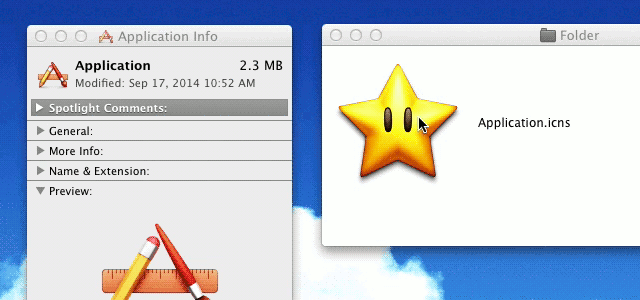
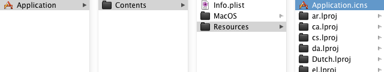
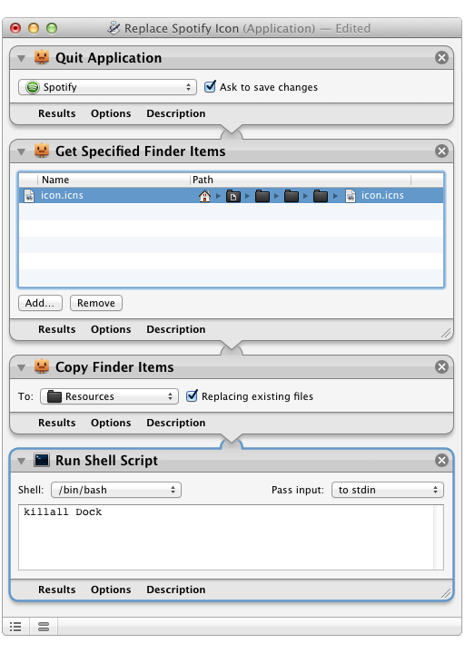

I've been customizing and experimenting with my Mac's icons for almost 5 years now. Here, I've done my best to provide clear, simple, and complete icon customization instructions so that others can do the same.
This guide focuses on the use of .icns files. They're the most common way to distribute Mac icons, and most free icons you find on dribbble [or elsewhere] will be in this format.
Customizing the icon of an individual file or folder is very easy.
Command + I or the File > Get Info menu item to bring up the file/folder's Info window.This will assign the .icns file to the file or folder you're customizingtechnically, inside a Resource Fork" of that file..
To remove this custom icon, first click on the 32px thumbnail in the Info window to select the custom icon, then press the "delete" key to remove it and revert to the original.
You can also use Command + C and Command + V on the thumbnails to Copy-and-Paste icons from one file's Info window to another. For older icon-sets that appear as folders with custom icons applied [rather than as pure .icns files], thumbnail Copy-and-Paste is the way to use the icons on your own desktop.
The previous Get Info + Drag & Drop method can also be used to replace Application icons.
This method isn't perfect, though. If you use the "Get Info" method, Applications that modify or decorate their Application icon work will revert to the original when decorating the icon.
Manual replacement doesn't have this problem:
For Mac App Store apps that are code-signed for security, manual replacement will probably break the app.Although I've had some luck with manual replacement followed by running the Xcode-reliant command sudo codesign -f -s /Applications/SomeApp.app in Terminal. For your MAS apps, just use the "Get Info" method. For non-MAS apps, though, manual replacement is a more reliable way to customize the icon.
Here's how:
Show Package Contents. Then open the folder named "Contents", and, inside, the folder named "Resources". For Applications that frequently update [like Spotify or Dropbox], manually replacing the icon after each update can be tedious. Thankfully, this process can be automated using OS X's built-in Automator. Here's a sample Applet that quits Automator, replaces the Spotify icon, and quits the dock so that the change takes effect immediately:
For most Applications, this is overkill, but for a few it's very helpful.
Although manual replacement of System Icons is possibleYou can find most of then in the Resources subdirectory of /System/Library/CoreServices/CoreTypes.bundle/ , there are some free, intuitive apps to make this process very easy:
You can use these to change the default folder icons, document icons, sidebar icons, Finder/Trash icons, and other System-wide images.
If you're looking for a good system set, I'd recommend Minium, or De Anza Folders/Ive Drives.
Changes to icons may take a bit to propogate through Finder and the Dock. Relaunching Finder/Dock using Activity Monitor or Terminal can speed up your customization.
These methods should all work on Yosemite as well as the less flat versions of Mac OS X. Please contact me at @madebyollin or madebyollin@gmail.com if one of them doesn't.
Happy customizing ❤